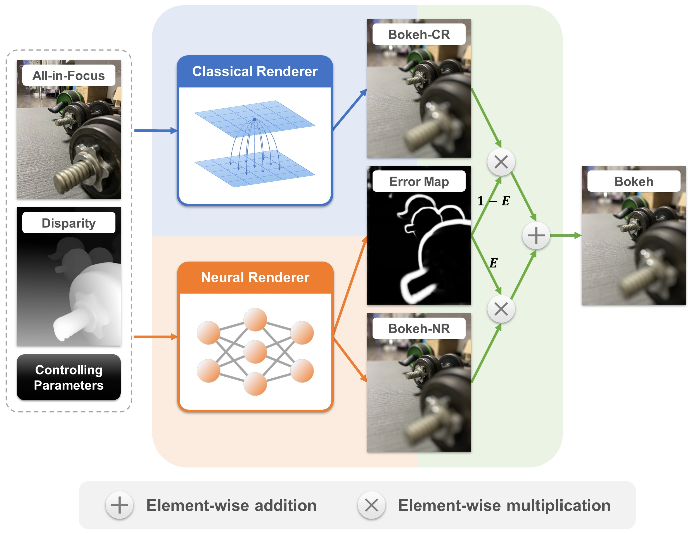
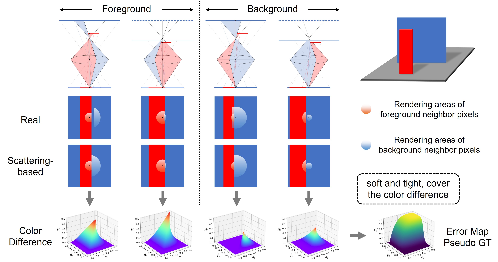
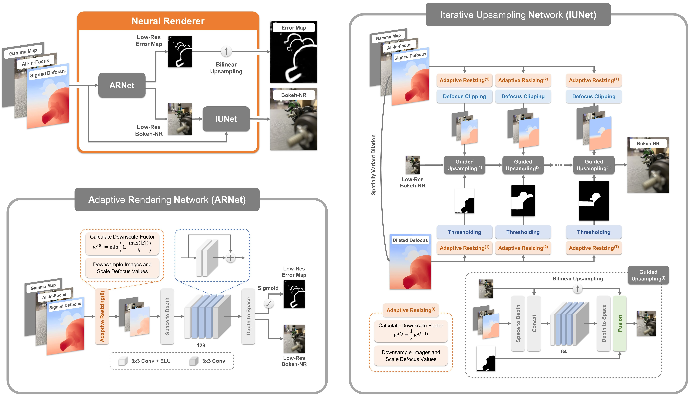
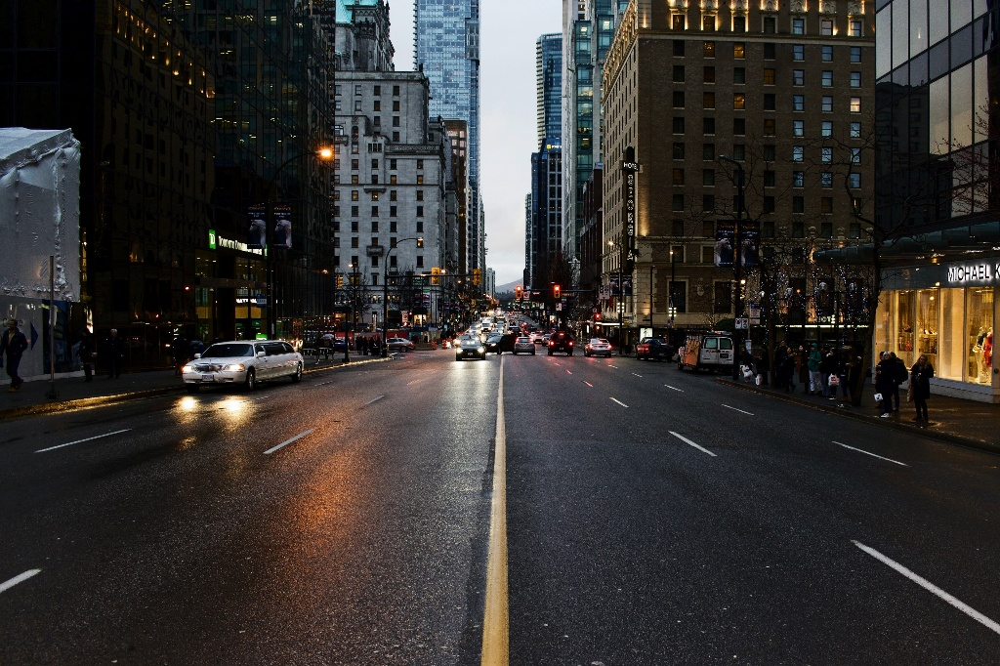

BokehMe: When Neural Rendering Meets
Classical Rendering
2Adobe Research
Video
Abstract
We propose BokehMe, a hybrid bokeh rendering framework that marries a neural renderer with a classical physically motivated renderer. Given a single image and a potentially imperfect disparity map, BokehMe generates high-resolution photo-realistic bokeh effects with adjustable blur size, focal plane, and aperture shape. To this end, we analyze the errors from the classical scattering-based method and derive a formulation to calculate an error map. Based on this formulation, we implement the classical renderer by a scattering-based method and propose a two-stage neural renderer to fix the erroneous areas from the classical renderer. The neural renderer employs a dynamic multi-scale scheme to efficiently handle arbitrary blur sizes, and it is trained to handle imperfect disparity input. Experiments show that our method compares favorably against previous methods on both synthetic image data and real image data with predicted disparity. A user study is further conducted to validate the advantage of our method.
Method
-
Framework
-
Classical Renderer
-
Neural Renderer
-
Taking an all-in-focus image, a potential imperfect dispairty map, and some controlling parameters as input, BokehMe can produce artifact-free and highly controllable bokeh effects by combining a classical renderer and a neural renderer.
 -
The classical renderer is implemented by a scattering-based method. To determine the areas rendered incorrectly by this method, we conduct an analysis on the error between scattering-based rendering and real rendering on a virtual lens system and derive an error map which identifies these areas.
 -
The neural renderer aims to handle the areas rendered incorrectly by the classical renderer and overcome the limitations of the blur range. To this end, we first use ARNet to adaptively resize the input and produce a low-resolution error map and a low-resolution bokeh image. Then, the bokeh image is iteratively upsampled by IUNet without losing quality, while the error map is bilinearly upsampled, which enables a smooth fusion of the rendered results from the two renderers.

Visualization
-
BLB
-
EBB400
-
IPB
-
Animation
-
Results on the BLB dataset which is rendered by Blender 2.93.


Results on the IPB dataset which is captured by iPhone 12 Portrait mode.


Animations on real-world images with different controlling parameters.
Blur Amount


Refocused Disparity


Gamma Value


Aperture Shape



Dataset
We release the BLB dataset rendered by Blender 2.93. The dataset contains 10 scenes, each consisting of an all-in-focus image, a disparity map, a stack of bokeh images with 5 blur amounts and 10 refocused disparities, and a parameter file. We additionally provide 15 corrupted disparity maps (through gaussian blur, dilation, erosion) for each scene. All 3D Blender models come from https://cloud.blender.org/p/gallery. Our BLB dataset can be downloaded from Google Drive or Baidu Netdisk.
|
 |
 |
|
|
|
 |
 |
 |
|